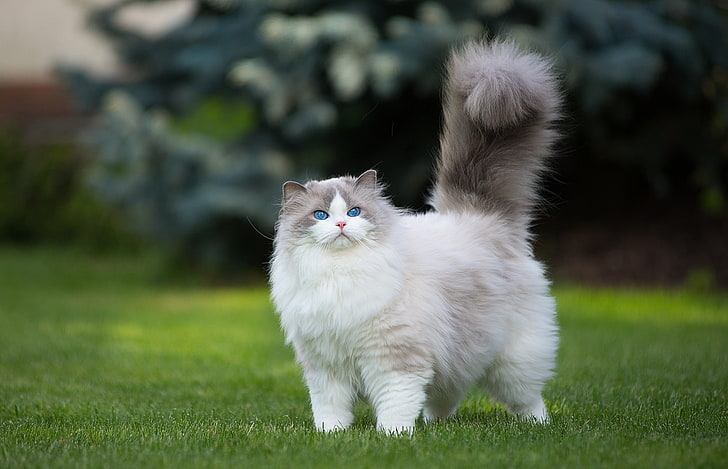

- Parrot
- $105
- Size: Parrots come in a variety of sizes, from the tiny budgie to the large macaw. Consider how much space you have in your home and how much time you can commit to exercising your parrot before choosing a size. Personality: Parrots have different personalities, just like people. Some are more outgoing and playful, while others are more shy and reserved. Do some research to learn about the personality of the different parrot species before choosing one. Noise level: Parrots can be very noisy, especially when they are not getting enough attention. If you live in an apartment or other close quarters, you may want to choose a quieter species of parrot. Lifespan: Parrots can live for many years, some up to 80 years. Make sure you are prepared for the long-term commitment of owning a parrot before getting one. Cost: Parrots can be expensive to care for. The initial cost of purchasing a parrot, cage, food, and toys can be significant. You will also need to factor in the cost of regular vet visits and annual checkups.

- Persian Cat
- $200
- Appearance: Persian cats are medium-sized cats with short legs, a round head, and a long, thick coat. They have large, round eyes that are typically blue, green, or gold. Their nose is short and snubbed, and their ears are small and rounded. Personality: Persian cats are known for being gentle, affectionate, and docile. They are also relatively low-maintenance cats, and they do not require a lot of exercise. However, they do need to be groomed regularly to keep their long coat clean and free of mats. Health: Persian cats are generally healthy cats, but they are prone to some health problems, such as: Eye problems, such as tear duct blockages and corneal ulcers Breathing problems, due to their flat faces Skin problems, such as allergies and hot spots Obesity, due to their sedentary lifestyle Lifespan: Persian cats typically live for 10-15 years.

- Cat
- $150
- Cats are small, furry mammals with long tails. They have four legs and sharp claws that they use to climb and catch prey. Cats have keen senses of sight, hearing, and smell. They can see in low light and have excellent night vision. Cats are solitary hunters, but they can also be social animals. They communicate with each other through a variety of vocalizations, including meowing, purring, and hissing. Cats are crepuscular, meaning they are most active at dawn and dusk. Cats are obligate carnivores, meaning they need to eat meat to survive. Cats are popular pets because they are relatively low-maintenance and can be very affectionate.